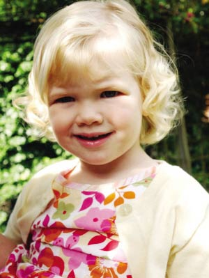

| 英国学者列举“天才”儿童六大特征 |
英国学者列举“天才”儿童六大特征
英国两岁天才女童乔治娅·布朗智商152，接近爱因斯坦。家长总是把考试成绩作为衡量聪明孩子和好孩子的首要标准。
英国学者发现，家长们的这种想法可能会扼杀孩子潜在的才能。他们建议，家长们应细心观察孩子们除学习成绩外的表现，因为那可能预示着孩子在某一方面是个“天才”。 http://photo10.hexun.com/p/2008/0129/167478/b_C12CAD1F83A68F75AB9366DFEDE5A0CD.jpg
易被忽视
英国《每日邮报》４日报道，英国牛津大学天才儿童研究中心前讲师贝纳德特·泰南认为，许多天才儿童可能在学校或考试中表现并不优异，但他们在其他方面的表现能够说明他们拥有高于同龄儿童的才能。
泰南为望子成龙的家长们列出一份天才儿童特征清单，希望那些以考试论英雄的家长们能够参照清单，发现孩子的潜能。在清单中，她给出小学生６大最容易被家长忽视的才能特征。
特征一：喜欢发号施令的领袖。善于重新排列物品或有条不紊地在学校里负责给全班同学排座位的孩子，他们可能具备强有力的领导和组织才能。
特征二：年轻的大亨。在小学里，一些孩子很快发现，如果他们将平时的零用钱积攒起来，他们假期中就将拥有一大笔钱来支配。这些孩子长大后很可能成为像英国维京大西洋航空公司总裁理查德·布兰森那样的人。
其他４项
特征三：刨根问底者。一些孩子总是充满好奇，有时甚至不厌其烦地问问题。但是如果他们这种特性得到家长的培养和重视，他们极有可能成为记者或美国航空和航天局的宇航员。
特征四：设计师。这种类型的孩子，如果让他独自待一会儿，他就能够用积木搭建出一座法国埃菲尔铁塔的模型。具有这种才能的孩子是设计天才。
特征五：故事讲述者。有的孩子喜欢讲故事和写故事。他们的想像力丰富。发现孩子有此种个性的家长要好好培养孩子，因为他们很可能是下一个Ｊ·Ｋ·罗琳。罗琳是《哈利·波特》系列魔幻小说作者。
特征六：演讲者。这种孩子喜欢同人讲话。他们甚至在上课时也和同学在下面窃窃私语。作为家长，请不要制止他们的行为。他们的行为说明，他们有着特殊的演讲才能，若加以正确培养，他可能成为律师或电视主播。
家长培养
泰南正在英国多所小学寻找她所定义的天才儿童，并制作一个相关电视系列节目。这个节目名为“让你的孩子成为天才”，定于３日在英国电视５台播出。
泰南认为，“考试定输赢”正在摧毁孩子们的创造力和革新能力。
“并不是孩子的所有才能都能通过一支笔和一张纸的考试来发现，”她说，“他们可能擅长建筑、有丰富想像力或有领导才能。这些才能不能简单地被衡量。”
此外，泰南说，考试不仅不能发掘一些孩子除学业以外的才能，还可能埋没一些好学生，因为他们有时在考试中将答案考虑得过于复杂，希望找出题目所蕴含的更深层含义，但通常题目只要求直接的答案。
泰南建议家长们注重培养孩子解决问题和推理的能力，提升他们成功的机会。
她说：“每个孩子都有特殊才能。给他们一个机会，他们真的能够超越他人”。（闫超）